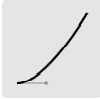
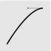
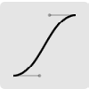

- ease
- 
- ease-in
- 
- ease-out
- 
- ease-in-out

- linear
持续点击按键展示动画效果

#previewImg{
-webkit-transition:all 3s ease s;
-moz-transition:all 3s ease s;
-ms-transition:all 3s ease s;
-0-transition:all 3s ease s;
transition:all 3s ease s;